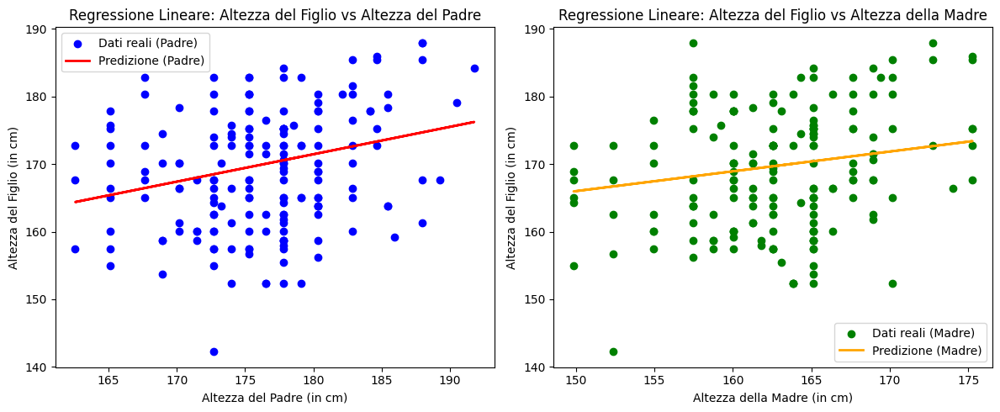

I Miei Progetti
Analisi dell'altezza tra genitori e figli
Analisi dell'andamento della pandemia utilizzando Python e Pandas.
Vai al ProgettoAnalisi news degli Stati Uniti

Implementazione di modelli predittivi per le previsioni meteorologiche.
Vai al ProgettoAnalisi del Mercato Azionario
Studio delle tendenze di mercato con tecniche di data mining.
Vai al Progetto